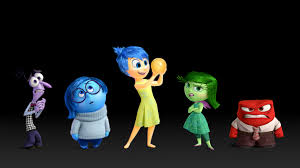
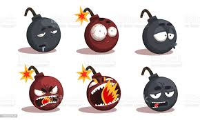

About Hamroyev Mirshod
My name is Hamroyev Mirshod and I want to talk little bit about myself!
I study at IUT. I have entered this university 2 months ago. Whether it is less time to get to know with whole university life, I think I am managing every thing that I encounter in the university life.
My Courses
- Physics 1
- Calculus 1
- Academic English
- Academic English Reading
- OOP - Object Oriented Programming
- IT to IT - Introduction to IT
- National Identity
My Hobbies
- Chess
- Football
- Coding
- Ping-Pong
My Favorite Movies
- If you want to watch movie, Click HOBBITS
- Lord of The Rings
- American Psyco
My And My Friends' Moods
Above, I intende to represent humans' emotions by the picture!
But, we ,students of IUT, have above kind of emotions!
Especially,students who works on themselves mostly feels overwhelmed, anxsious and nerves by their universities' study plans!